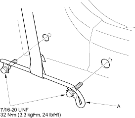
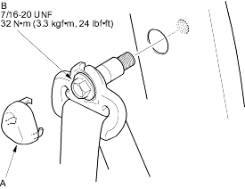

SRS components are located in this area. Review the SRS component location, precautions and procedures in the SRS section before performing repairs or service. Refer to the '01 Civic Shop Manual, P/N 62S5A00 on this CD NOTE:
NOTE: Check the front seat belts for damage, and replace them if necessary. Be careful not to damage them during removal and installation.
Front Seat Belt
- If equipped, make sure you have the anti-theft code for the radio, then write down the frequencies for the preset buttons.
- Disconnect the negative battery cable, and wait at least 3 minutes before beginning work.
- Slide the front seat forward fully.
- Remove the lower anchor bolts, then remove the slide bar (A).

- Remove the slide trim panel refer to '01 Civic Shop Manual on this CD (see page 20-35).
- Remove the upper anchor cap (A) and remove the upper anchor bolt (B).

- Disconnect the seat belt tensioner connector (A). Remove the retractor mounting self-tapping ET screw (B) and the retractor bolt (C), then remove the front seat belt (D) and retractor (E).